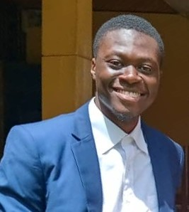

KHAM-MBONGOBelland BeaudetEtudiant en 3ème année à l'Université Inter-etat Congo Cameroun(UIECC) Ecole Supérieur Internationale de Génie NumériqueESIGN | brefingBelland KHAM est un etudiant Congolais, actuellement au Cameroun pour la continuité de ses etudes supérieur depuis l'année 2020 dans le demaine du Numérique SumaryBelland KHAMEtudiant bac+3 en Ingénierie numériques à l'Université Inter-etat Congo-Cameroun.
EducationObtention du Baccalaureat2019 - 2020
Licence I2020 - 2021Début des cours à lécole Supérieur Internale du Génie Numérique(ESIGN), UIECC
Licence II2021 - 2022Apprendissement des notions lié au numériques
Licence III (present)2022 - 2023Suite de l'apprendissement des notions lié au numériques Projet Integrateur
Experience ProfessionallePratiqueOutils logiciels
|